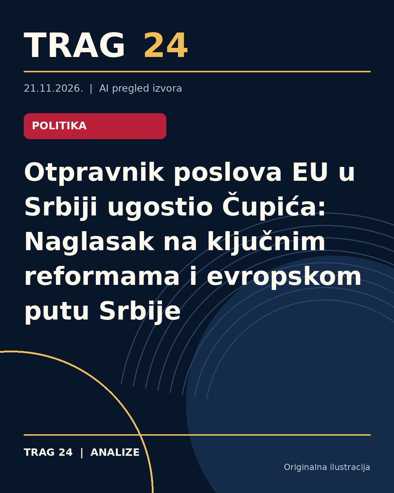

Otpravnik poslova EU u Srbiji ugostio Čupića: Naglasak na ključnim reformama i evropskom putu Srbije

ŠTA SE DOGODILO
Otpravnik poslova Evropske unije u Srbiji, Džulijan Vasalo, sastao se sa predsednikom Narodne skupštine i vršiocem dužnosti predsednika Srbije Aleksandrom Čupićem. Sastanak je održan tokom prvog punog dana Čupićevog mandata na funkciji predsednika parlamenta.
HRONOLOGIJA
Aleksandar Čupić izabran je za predsednika Narodne skupštine 19. novembra, čime je preuzeo i dužnost vršioca dužnosti predsednika Srbije. Džulijan Vasalo zvanično je započeo svoj mandat otpravnika poslova Delegacije EU u Srbiji 8. novembra, nakon završetka mandata prethodnog ambasadora. Sa njima je održan sastanak početkom Čupićevog mandata.
ŠTA NAVODE IZVORI
Izvori navode da su se tokom razgovora fokusirali na potrebu ostvarenja konkretnih pomaka u ključnim oblastima, naročito u vladavini prava, u kojoj su posebno istaknuta pregovaračka poglavlja 23 i 24. Takođe je naglašena važnost jačanja demokratskih institucija, nezavisnosti pravosuđa, slobode medija i bolje javne komunikacije o evropskim integracijama. Dogovoreno je i sprovođenje daljih tehničkih razgovora u sektorima obrazovanja, energetike i životne sredine. Čupić je izrazio žaljenje što neće moći da prisustvuje predstojećem samitu EU i Zapadnog Balkana, ali je istakao prioritetnost odnosa sa EU i reformi.
ŠTA JE POTVRĐENO
Potvrđeno je da je sastanak odražan u rezidenciji Delegacije EU u Srbiji i da je Vasalo jasno izrazio podršku Narodnoj skupštini Srbije u sprovođenju demokratske reformske agende. Takođe je potvrđeno da EU ostaje posvećena politici proširenja i podršci Srbiji na evropskom putu. Čupićev prioriteti u daljoj saradnji sa EU i sprovođenju reformi su jasno istaknuti.
ŠTA NIJE POTVRĐENO
Nema potvrde o konkretnim rokovima za napredak u pregovorima ili detaljima konkretnijih planova za implementaciju reformi. Takođe nije potvrđeno da li će doći do promene u pristupu EU prema Srbiji u skorijem periodu nakon ovog sastanka.
ŠTA OSTАJE OTVORENO: Ostaje nepoznato na koji način će se dalji tehnički razgovori realizovati i kakav će konkretan uticaj oni imati na pregovarački proces Srbije sa EU. Takođe nije poznato da li će naredni samit EU i Zapadnog Balkana na kojem Čupić neće prisustvovati doneti nove smernice ili odluke vezane za Srbiju.
Izvori
- https://nova.rs/vesti/politika/otpravnik-delegacije-eu-u-srbiji-ugostio-cupica-narodna-skupstina-ima-cvrstog-saveznika-u-uniji/
- https://n1info.rs/vesti/novi-sef-delegacije-eu-u-srbiji-ugostio-cupica/
Ova analiza je pripremljena uz pomoć veštačke inteligencije na osnovu javno dostupnih izvora. Navodi izvora nisu nužno nezavisno potvrđeni.